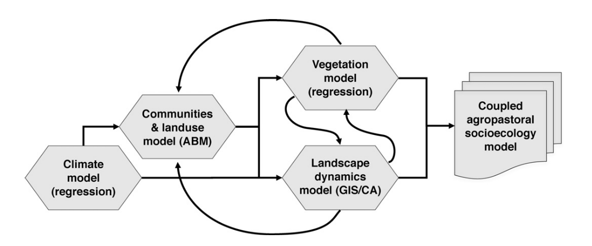

2 ABM in archaeology
ABM has conceptual roots and applications in other fields relatively early, hand-to-hand with the history of computer science. However, this methodology was formed as it is today and introduced more broadly into social sciences only in the 1990s.
ABM has been exceptionally well-accepted by archaeologists, given its pre-adaptation towards distributed and stochastic processes. Most phenomena of interest for archaeology can be represented with ABM, to the satisfaction of archaeologists. Other modelling and simulation approaches (e.g., Dynamic Systems) were and still are used but often encounter great resistance due to their higher abstraction and simplification.
2.1 A transdisciplinary approach
ABM flexibility is also very much appreciated by researchers involved in archaeology, given that it is a discipline both historically and thematically positioned in between other disciplines in the overlap of the so-called natural and artificial worlds. An ABM model can handle multiple layers of entities and relationships, allowing it to integrate entire models under the same hood.
The same advantage was exploited by disciplines such as ecology, environmental science, and geography. The approach used by these disciplines has been the main motor driving the development of models in archaeology for more than two decades. Some authors have named this transdisciplinary framework as the research of socio-ecological systems (SES), which has been defined in close relationship with the more general complexity science approach. One of the first cases of public success of ABM in archaeology, the model that become known as Artificial Anasazi model (Axtell et al. 2002), emerged from this approach and as a collaboration between researchers orbiting the Santa Fe Institute.
Despite its positive influence in pushing the field forward, the SES approach has also limited the diversity of scope and theory used with ABM in archaeology. ABM under SES aligns particularly well, for example, with research questions related to landscape and environmental archaeology and formulated from a perspective biased towards processualism. This tutorial is no exception. To the potential “new blood” in this field, I recommend always keeping the mind open to all questions and theoretical frameworks, particularly those you are already invested in.
ABM in archaeology has been a prolific field, despite being still enclosed in a small community. Here, we will only cover a small part of the field, specifically from my perspective. For a broader introduction to the multitude of contributions in this field, I refer to any of the many introductions included in References. I recommend the recent textbook by Romanowska, Wren & Crabtree (2021), which also includes many practical exercises in NetLogo, using a programming style and philosophy significantly different from this tutorial.
2.2 Domains of application and examples
Here is a non-exhaustive list of examples of simulation and ABM in archaeology organised by topics:
- Physico-chemical dynamics
- Artefact production: operational chain (chaîne opératóire), authorship and style, material transformations during manufacturing (Sorensen and Scherjon 2018), use and deposition (Gravel-Miguel and Wren 2018).
- Site formation: distribution of artefacts and structures (Gravel-Miguel and Wren 2018), preservation, strata formation and taphonomy (Davies, Holdaway, and Fanning 2016), sample bias.
- Artefact production: operational chain (chaîne opératóire), authorship and style, material transformations during manufacturing (Sorensen and Scherjon 2018), use and deposition (Gravel-Miguel and Wren 2018).
- Ecological dynamics
- Climate patterns: seasonality (Angourakis, Bates, et al. 2022), regional variations, climate change (Bocquet-Appel et al. 2014).
- Soils: erosion and sediment accumulation (Kabora, Stump, and Wainwright 2020; Robinson et al. 2018; Ullah, Chang, and Tourtellotte 2019).
- Hydrological dynamics: water availability, run-off, irrigation (Altaweel and Watanabe 2012a; Altaweel and Watanabe 2012b).
- Vegetation: plant domestication (Angourakis, Alcaina-Mateos, et al. 2022), crop dynamics (Angourakis, Bates, et al. 2022; Baum et al. 2016; Boogers and Daems 2022; Christiansen and Altaweel 2006; Joyce 2019; Robinson et al. 2018), deforestation and fires (Boogers and Daems 2022; Nikulina et al. 2024; Snitker 2021, 2018).
- Non-human animal behaviour: dynamics of wild populations under human influence (Morrison and Allen 2017), domestic animal population dynamics (Günther et al. 2021), herd behaviour, animal husbandry, transhumance (Günther et al. 2021) (See also the Dairy-versus-Transhumance model, my own work, still under development).
- Climate patterns: seasonality (Angourakis, Bates, et al. 2022), regional variations, climate change (Bocquet-Appel et al. 2014).
- Anthropological dynamics
- Individuals: pedestrian dynamics (M. Lake 2001), foraging (Brantingham 2006; Oestmo, Janssen, and Marean 2016), metabolism, kinship (Rogers 2013), health and population dynamics (mating and marriage, reproduction, mortality) (Verhagen 2019), cognition (memory, rationality and learning) (Mokom 2015; Premo and Tostevin 2016; Sousa, Correia, and Garcia-marques 2019; Acerbi, Mesoudi, and Smolla 2020), individual-to-individual cooperation and competition (Graham 2009; Sousa, Correia, and Garcia-marques 2019; White 2013).
- Groups: household organization and microeconomics (Christiansen and Altaweel 2006; Joyce 2019), emergence of alliances and organisations (Cioffi-Revilla, Honeychurch, and Rogers 2015; White 2013), group-to-group cooperation and competition (Angourakis et al. 2014, 2015, 2017; Cioffi-Revilla, Honeychurch, and Rogers 2015; Rogers 2013), group mobility (Rogers 2013; Santos et al. 2015), logistics and military tactics (Rubio Campillo, Cela, and Hernàndez Cardona 2012; Rubio-Campillo, Cela, and Cardona 2014; Verhagen 2019), prestige, reward and punishment, social learning, cultural transmission and norm emergence (Gower-Winter 2022; Mokom 2015; Premo and Tostevin 2016; Drost and Vander Linden 2018; Acerbi, Mesoudi, and Smolla 2020).
- Settlements: population dynamics (Verhagen 2019; Crema 2014), resource exploitation (Boogers and Daems 2022), trade (Carrignon, Brughmans, and Romanowska 2020; Chliaoutakis and Chalkiadakis 2020; Lawall and Graham 2018; Ortega et al. 2014; Sakahira et al. 2021), migration, macro-economics, urbanisation, cultural evolution (Carrignon, Brughmans, and Romanowska 2020; Gower-Winter 2022; M. W. Lake and Crema 2012; Mokom 2015; Sakahira et al. 2021), settlement patterns and land use (Altaweel, Palmisano, and Hritz 2015; Chliaoutakis and Chalkiadakis 2020; Angourakis et al. 2014, 2017; Boogers and Daems 2022; Joyce 2019; Robinson et al. 2018; Rogers 2013; Snitker 2018; Ullah, Chang, and Tourtellotte 2019), politogenesis (Cioffi-Revilla, Honeychurch, and Rogers 2015; Rogers 2013; Turchin 2018), catastrophic collapse or abandonment (Kohler and Varien 2012; McAnany et al. 2015).
- Regional to global: cooperation and competition between territorial states (Turchin 2018), trade routes (Chliaoutakis and Chalkiadakis 2020; Lawall and Graham 2018; Ortega et al. 2014), human species dispersal (Callegari et al. 2013) and genetic and cultural diffusions (Bocquet-Appel et al. 2014; Kovacevic et al. 2015; Mokom 2015)
2.3 Examples
- “Artificial Anasazi” (Axtell et al. 2002; Janssen 2009)

The Artificial Anasazi model was developed to explore population dynamics in Long House Valley, Arizona. The model represents a population of households, with a simplified food economy based on maize cultivation. By simulating this system, researchers were able to test the hypothesis that climate change was the main cause of the abandonment of the valley.

- “HOMINIDS” (Griffith, Long, and Sept 2010)


- “MedLanD” (Barton et al. 2012)


- “HouseholdsWorld” (Rogers et al. 2012)


- MayaSim (Heckbert 2013)


- “Indus Village” (Angourakis 2021; Angourakis et al. 2020; Angourakis, Bates, et al. 2022; Angourakis, Baudouin, and Petrie 2025)


repository: https://github.com/Andros-Spica/indus-village-model
2.4 Unfinished business: representation and validation
Despite the relative success and proliferation of agent-based modelling in archaeology, there is still an unsolved debate over the epistemological nature of simulation models as explanatory.
To be explanatory, models must connect to a process as a phenomenon, as it is defined to the best of our knowledge (representation), and the evidence we raise and select as relevant (validation). Both archaeologists and non-simulation modellers sometimes dismiss agent-based models in archaeology as faring too far from the realm of archaeological evidence. Why should we dare (or even bother) to simulate past processes that cannot be observed through material remains?
It is, unfortunately, too easy to ignore the difference between descriptive and explicative models and leave archaeological interpretations imposed on descriptive models unchecked by formalisation. When a descriptive mathematical model is used, a good validation result (fit given an evidence set) does not guarantee that the interpretative model represents the process to which it is attributed. More importantly, good validation can be confused with a good representation.
For example, imagine we, as archaeologists, are convinced that humans were able to feed on a certain kind of rock at some remote point in the past. When applying the most robust methods in cartography and inferential statistics on the evidence of human presence and findings of such rocks, we might find that a positive correlation confirms our belief. However, the representation link between our interpretation and the reality of the past process is weak. Our belief would only hold while impermeable to formalisation and a larger knowledge background. Alternatively, perhaps, we would quickly realise the metabolic constraints of stone digestion.
Modelling is about structuring your thoughts about the world, and mathematical modelling does that with extra discipline. Explanatory and, particularly, simulation modelling, however, is doing that specifically for reconstructing processes, stories, or, in other words, the mechanisms or webs of causality that we presume to be behind the semi-static reality we observe (e.g., archaeological materials).
Non-simulation computational modelling in archaeological research 
Simulation modelling in archaeological research 
We will practice the distinction between phenomena, evidence and mechanism when designing our own conceptual model.